About
History
Yale School of Art, a graduate school dedicated to the exploration of art in all its forms — since 1869.
I: The Origins of Yale School of Art
1832–1871
The study of the visual arts at Yale began in 1832 with the opening of the Trumbull Gallery, one of the first—and long the only gallery—connected with an American college. Trumbull Gallery was founded by patriot and artist Colonel John Trumbull, one-time aide-de-camp to General Washington, with the help of the celebrated scientist Professor Benjamin Silliman.
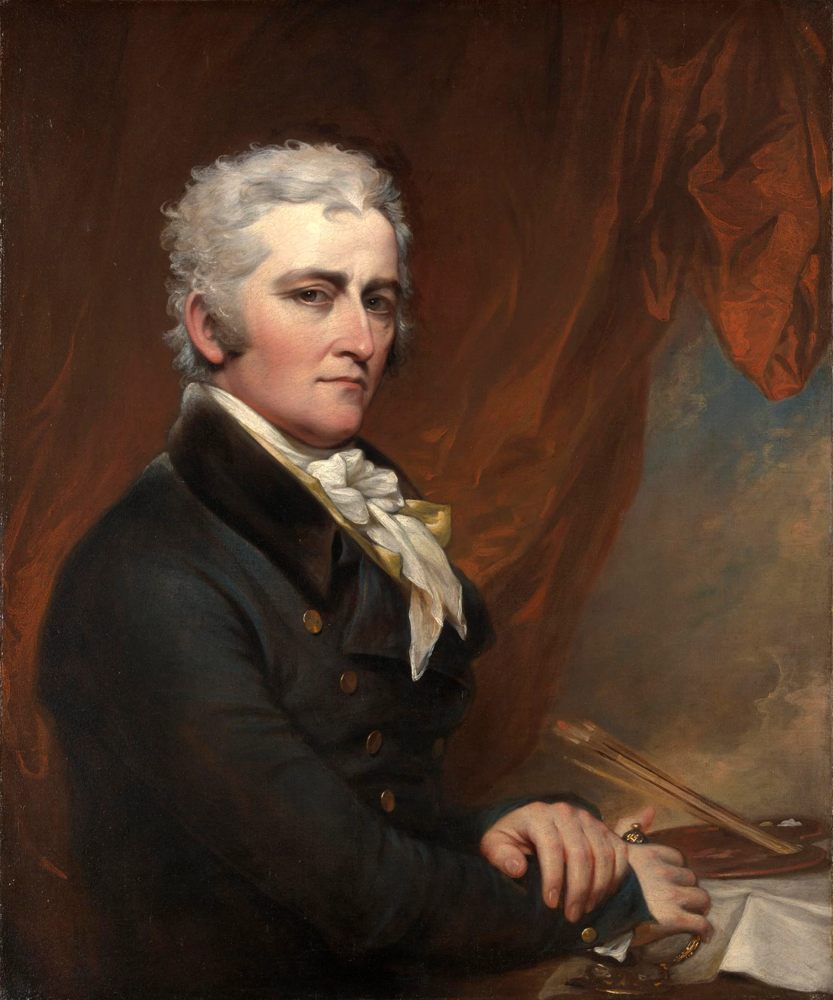
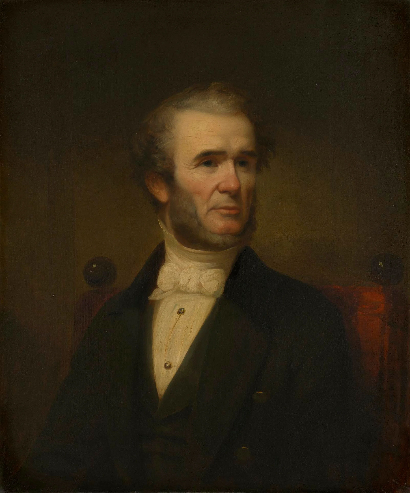
A series of related events led to the establishment of the Yale School of Art, the first art school connected with an institution of higher learning in the country: A successful art exhibition held in 1858 under the direction of the College Librarian, Daniel Coit Gilman, led to the establishment of an art school in 1864.
Endowed by Augustus Russell Street, a native of New Haven and graduate of Yale’s class of 1812, the Yale School of the Fine Arts opened in 1869.
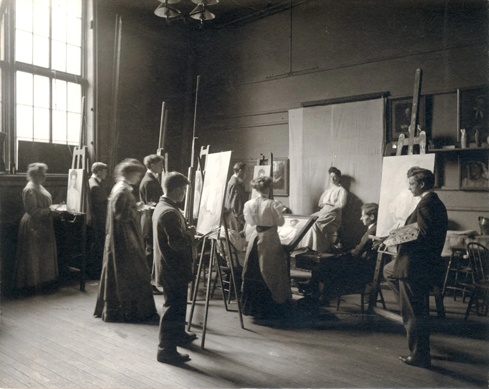
This new educational program was placed in the hands of an art council. Members included painter-inventor Samuel F. B. Morse, a graduate of Yale College. The school offered classes in drawing, painting, sculpture, and art history under its first director, then dean, American painter John Ferguson Weir.
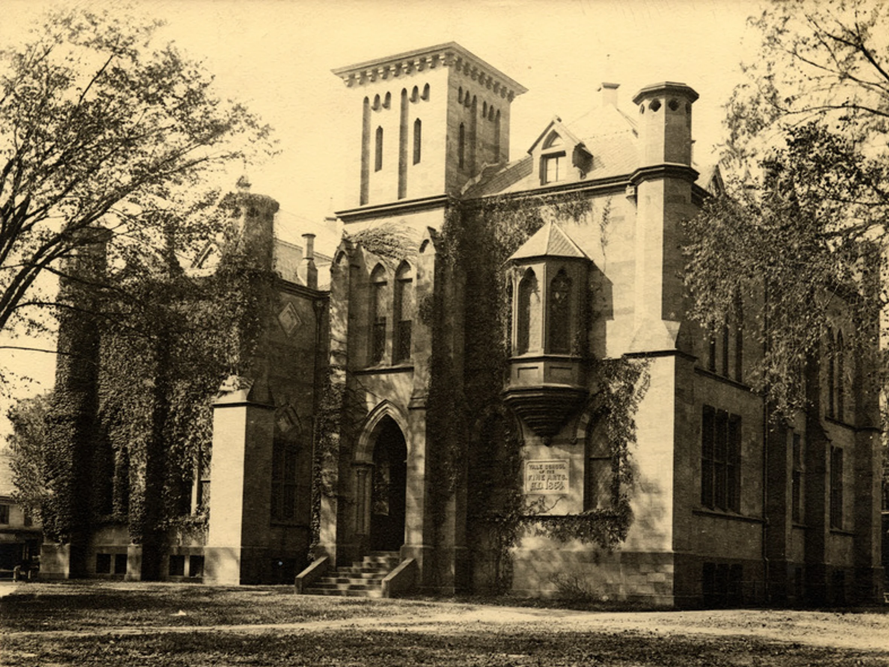
Street Hall is named after Augustus Street, who also endowed the building, which housed the collections of the old Trumbull Gallery. The collection grew in 1871 following the acquisition of the Jarves Collection of early Italian paintings.
II: The Curriculum Expands
1908–1962
As time passed, Yale School of Art began to add additional departments to the school: Architectural instruction began in 1908; in 1916, Everett Victor Meeks began directing the Architecture department. Drama was added in 1925 under the direction of George Pierce Baker. The School occupied its own building and functioned as a separate department of the School until it became an independent school in 1955.
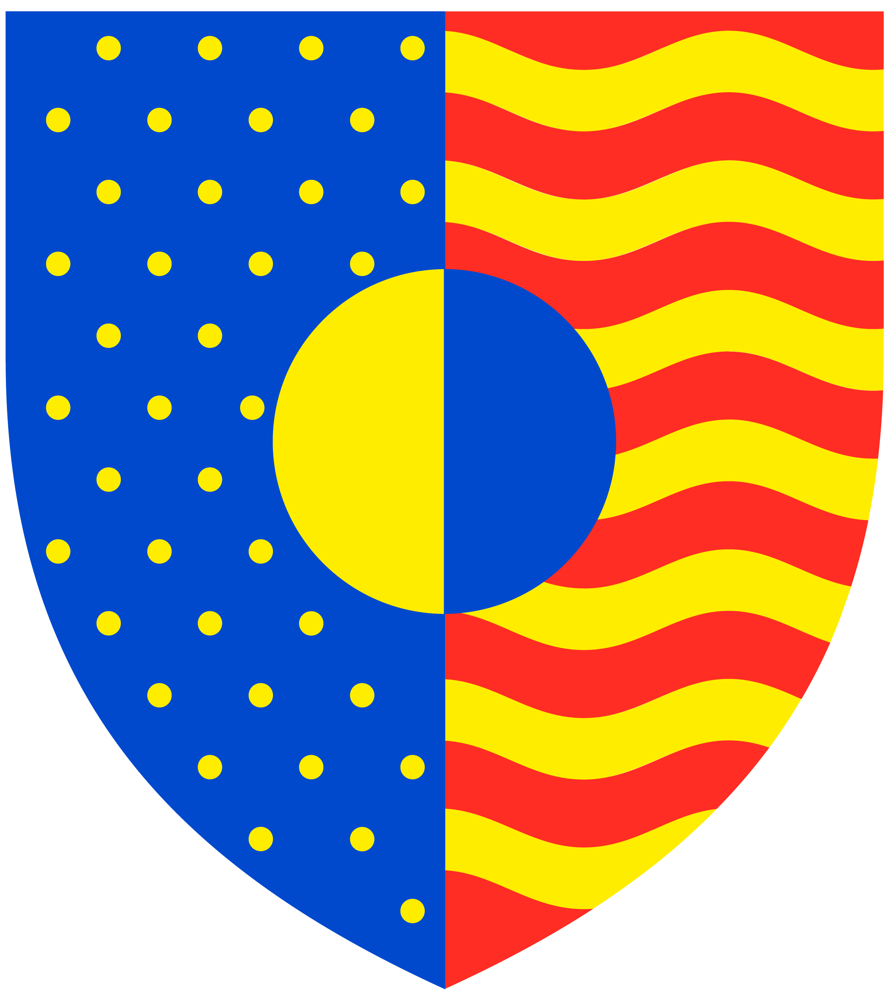
Yale School of Art has a storied architectural history that extends well beyond the Trumbull Gallery and Street Hall: Egerton Swartwout built and opened a new art gallery in 1928 through the generosity of Edward S. Harkness. The gallery was connected to Street Hall by a bridge above High Street, and Street Hall was therefore used for art instruction, while the Architecture program was moved to Weir Hall, as designed by George Douglas Miller.
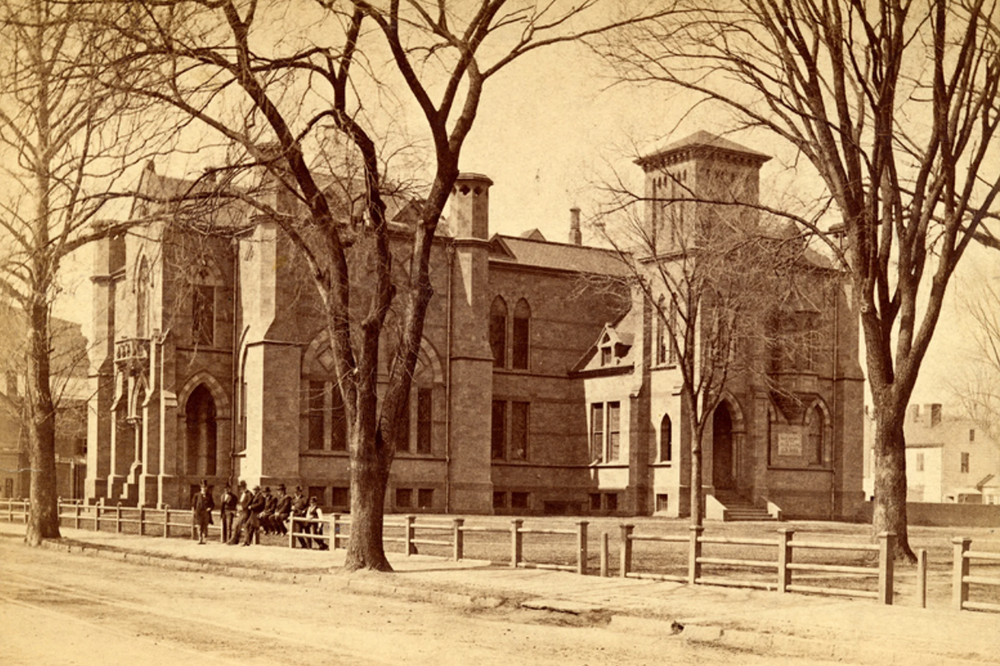
In 1953, Louis I. Kahn and Douglas Orr collaborated on the design of a large addition to the art gallery, which was funded by the family of James Alexander Campbell and an extended group of patrons. While several floors were initially used by the School of Art, the space was soon overtaken by the rapid expansion of the gallery’s collections. Designed by Paul Rudolph, the Art and Architecture building was opened in 1963 under the chairmanship of Ward Cheney and funded by many friends of the arts at Yale.
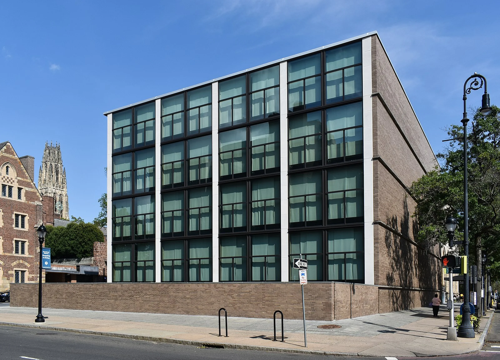
III: The Campus Grows
1959–2000
As the School continued to grow and change, new programs moved to other buildings on campus. The School of Art and Architecture was made a fully graduate professional school in 1959. In 1969, the School was constituted as two faculties, each with its own dean. Two separate schools were established by the President and Fellows in 1972: the School of Art and the School of Architecture. Both schools shared the Rudolph Building (now Rudolph Hall) until the year 2000.
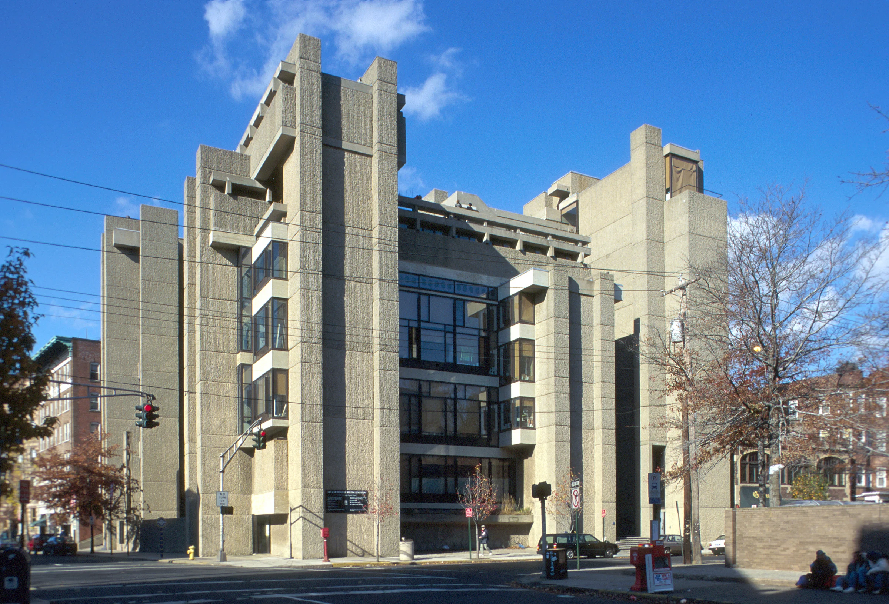
The Department of Sculpture was housed at 14 Mansfield Street in Hammond Hall, a large building formerly used for mechanical engineering, while Graphic Design was located in an old Yale fraternity building at 212 York Street.
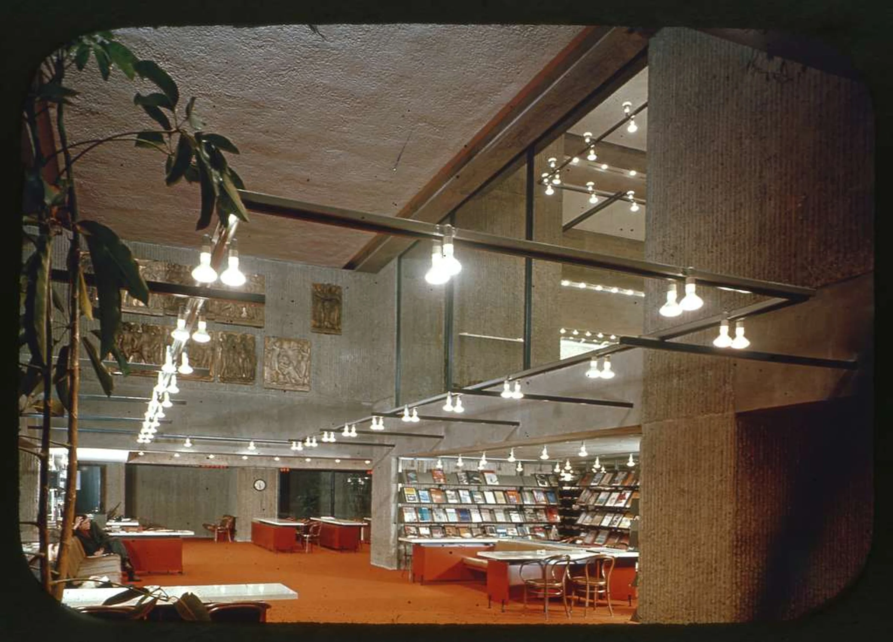
Additional classrooms and graduate painting studios were located at 215 Park Street. Street Hall was assigned to the University Department of the History of Art. The arts at Yale—Architecture, Art, the Art Gallery, the Center for British Art, the History of Art, the School of Drama, and the Repertory Theatre—thus occupied a group of buildings stretching along and near Chapel Street for almost three blocks.
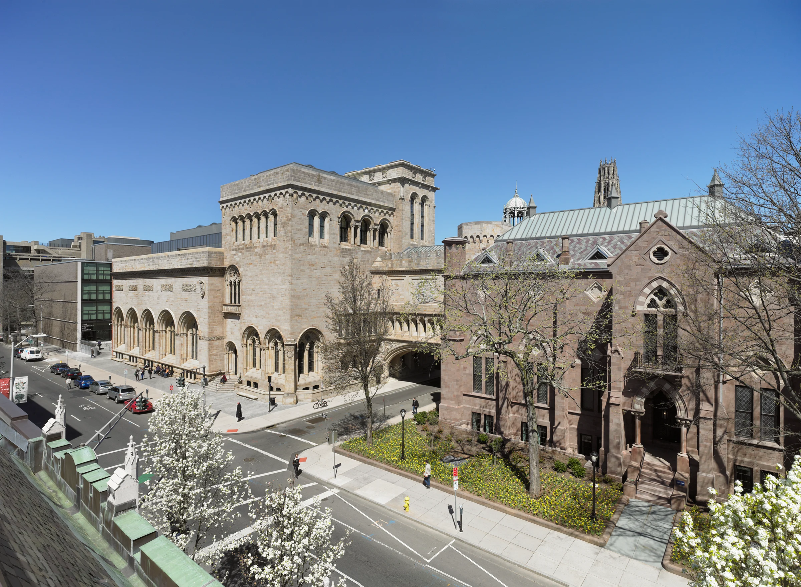
The University had long planned to extend the schools further up Chapel Street, a strategic initiative that was finally executed at the turn of the 21st century. In September of 2000, a new renovation of 1156 Chapel Street was opened; it included the addition of an adjoining building at 353 Crown Street.
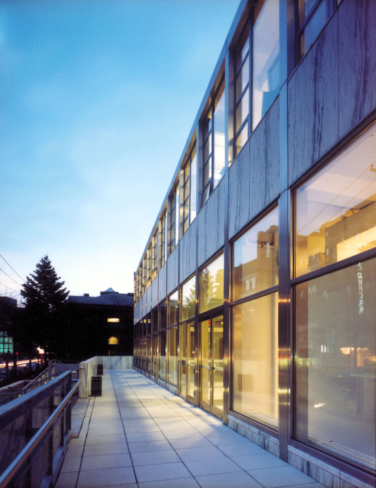
Deborah Berke designed the building, which was named after Yale College graduate Holcombe T. Green, Junior, who provided a generous gift to the project; Marion Rand, wife of late Graphic Design professor Paul Rand, also made a major contribution to the new complex, thus making its construction possible. The new art buildings housed most of the School of Art, save for Sculpture; it also featured an experimental theater for the School of Drama.
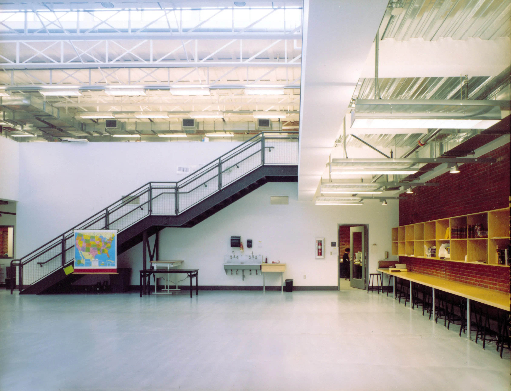
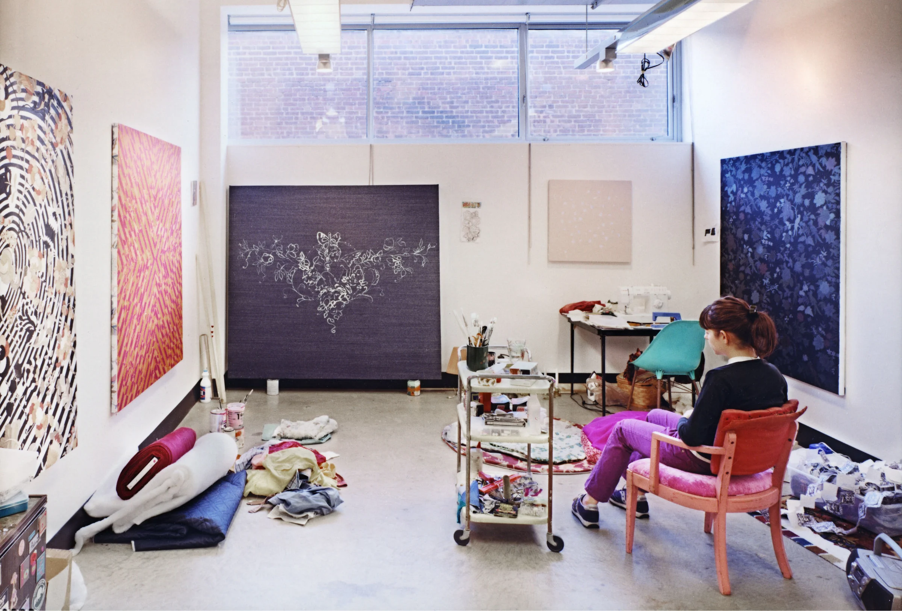
Kieran Timberlake designed two new buildings for the School of Art: 36 Edgewood Avenue, as well as an adjacent building, the new School of Art gallery at 32 Edgewood Avenue. Having been housed in Hammond Hall since 1973, the Sculpture department moved into 36 Edgewood Avenue in 2009.
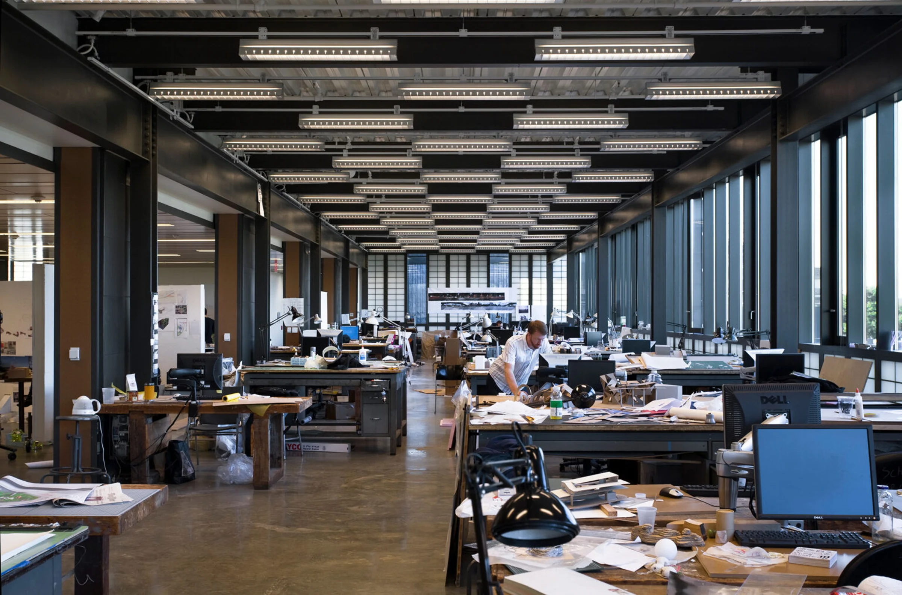